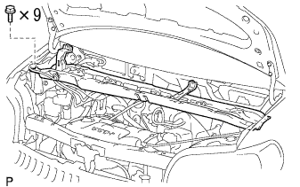
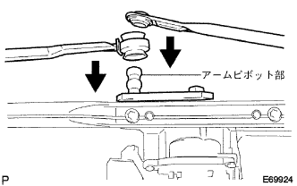

オキシジェン センサ 取り付け |
| 1. オキシジェン センサ取り付け |
 |
SSTを使用して、オキシジエンセンサを取り付ける。
コネクタを接続する。
| 2. カウルトップ パネル OUT取り付け |
|  |
ボルト9本でカウルトツプパネルOUTを取り付ける。
ワイヤハーネスのグロメットを取り付ける。
| 3. ウインドシールド ワイパ モータASSY取り付け |
 |
トルクスソケットレンチ(T30)を使用して、ボルト２本でウインドシールドワイパモータASSYを、ウインドシールドワイパリンクASSYに取り付ける。
|  |
ウインドシールドワイパモータASSYのクランクアームピボット部にデンソー50号グリースを塗布し、ウインドシールドワイパリンクアームを取り付ける。
| 4. ウインドシールド ワイパ リンクASSY取り付け |
 |
ウインドシールドワイパリンクASSYをウインドシールドワイパモータASSYが付いた状態でピンのかん合にはめ込む。
ボルト2本で、ウインドシールドワイパリンクASSYを取り付ける。
コネクタを接続する。
| 5. カウルトップベンチレータ ルーバ LH取り付け |
 |
クリップとツメ8個をかん合させ、カウルトップベンチレータルーバLHを取り付ける。
| 6. カウルトップベンチレータ ルーバ RH取り付け |
 |
クリップ2個とツメ7箇所をかん合させ、カウルトップベンチレータルーバRHを取り付ける。
| 7. フード トゥー カウルトップ シール取り付け |
 |
クリップ6個をかん合させ、ボンネット(フ-ド)ツウカウルトップシールを取り付ける。
| 8. フロントワイパアームRH取り付け |
 |
ワイパピボットセレーション部をワイヤブラシで清掃する。
ワイパアームセレーション部を丸やすり等で清掃する。(再組付け時)
 |
図の位置にフロントワイパブレードがくるようにフロントワイパアームRHをナットで取り付ける。
| 9. フロントワイパアームLH取り付け |
ワイパピボットセレーション部をワイヤブラシで清掃する。
ワイパアームセレーション部を丸やすり等で清掃する。(再組付け時)
 |
図の位置にフロントワイパブレードがくるようにフロントワイパアームLHをナットで取り付ける。
水またはウォッシャ液をガラスにかけながらフロントワイパを作動させ、ブレードの払拭状態およびボデーと干渉しないことを確認する。
| 10. エア クリーナASSY取り付け |
ボルト４本でエアクリーナケースとエアクリーナインレツトNo.1およびエアクリーナインレツトNo.2を取り付ける。
エアクリーナフイルタエレメントを取り付ける。
エアクリーナキヤツプとエアクリーナホースNo.1を取り付ける。